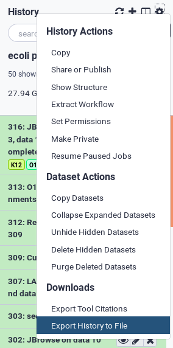
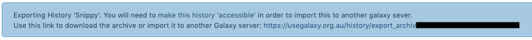
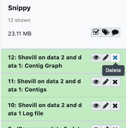

Downloading and Deleting Data in Galaxy
 Simon Gladman
Simon Gladman Helena Rasche
Helena RascheOverview
question Questionsobjectives Objectives
How can I efficiently download my data from Galaxy once I’ve completed my analyses?
How do I delete old data to make more room in my quota?
Have a greater knowledge of how Galaxy handles data downloads and deletions
Be able to successfully download and delete their own data
time Time estimation: 20 minutes
level Level: Introductory level level level
last_modification Last modification: Jan 6, 2021
Introduction
This tutorial outlines the process to get your data out of Galaxy and to delete it from Galaxy afterwards.
After you have completed your analysis on a Galaxy server, you may need to download the results for use in reports, papers, or other requirements. Galaxy has a myriad of methods for downloading data from individual datasets to a collection of data to an entire history along with all of its metadata. The first section of this tutorial will walk you through all of these methods.
On some Galaxy servers, user disk quotas have been enabled meaning that users are only able to store a certain amount of data on that particular Galaxy server. Quotas can differ on different servers. User disk quotas for the usegalaxy.* servers are shown in the table below:
| Galaxy Server | Unregistered User | Registered User |
|---|---|---|
| usegalaxy.org | 5 GB | 250 GB |
| usegalaxy.eu | 5 GB | 250 GB or 500 GB for Elixir Members |
| usegalaxy.org.au | 5 GB | 100 GB or 600GB for Australian Users |
Other Galaxy servers may have different quota systems.
As you use a Galaxy server and upload data, perform analyses etc. you will use up your quota. If you have filled your quota and you want to do some new work, you can download your old work and delete it off the Galaxy server to free up quota space. Galaxy uses a two step process to delete user data from disk. The first step is to delete the data - this marks the data as deleted but it can be undeleted for a certain time1. The second step is to purge the deleted data - this removes the deleted data from the disk and it is no longer recoverable. Note that any data that has been shared with another user will not be deleted from disk unless the other users also delete it.
The second section of this tutorial will outline how to delete data from your user space and to purge it from disk if you so desire.
Agenda
In this tutorial, we will cover:
Downloading Data from Galaxy
There are multiple ways of downloading your data from Galaxy, the choice of which method to use depends on the amount of data you wish to download. You can download a single dataset, multiple datasets all the way to entire histories.
Downloading a single file from Galaxy
The easiest way to get your data is to download a single dataset from a history.
The following example steps through the process using a generic history. The history pictured in the screenshots will most likely not appear in your Galaxy server but the process will be the same.
hands_on Hands-on: Download a single file
In the History pane, click on the name of the file you wish to download. This will expand the file in the History to show more details about it.
Click the galaxy-save Download button. The dataset will now be downloaded to your computer.


Repeat this for any other data file you want in this or other histories.
Download multiple datasets
Sometimes you may want to download multiple datasets at once and doing them one by one can be a pain. Luckily, Galaxy has a mechanism for creating Collections. For more details about collections and how to create them, see this tutorial from the Galaxy Training Network.
The concept is very simple however, we are just going to lump together our files of interest and download them all at once.
hands_on Hands-on: Download multiple datasets
Create a collection of the files you want
Click on the Collections button at the top of the History pane (the little checkbox)
This shows a different view of the History. Each file now has a checkbox next to it and there are some new buttons in the header section of the History.
Select the files you want by clicking on their checkboxes, you can also select all or none of them.
Once you have selected everything you want, click the for all selected button and then Build Dataset List
A new interface opens, showing you the files you have selected. Give the list a name in the appropriate box and click Create
A new collection item has now appeared in your History.
Download the collection
- Click on the name of the collection to show its contents
Click the galaxy-save Download Collection button to download the collection of files as a compressed archive to your computer.


You can repeat this process for other sets of files you want to download in other histories.
Download (export) an entire history including its metadata
The third way to download data from Galaxy is by Exporting a history in its entirety. This will allow you to download all of the data in a history as well as all of the metadata associated with it such as the tools used, their versions, the parameters chosen etc. It is downloaded as a single file archive. Once downloaded, you can also Import this history into another Galaxy server.
Depending on the size of the files and the complexity of the history, it can take quite some time to create the archive before download. For example it can take over 24 hours to create an archive file of a 50GB history. It may be simpler just to download the individual files of interest as outlined above.
hands_on Hands-on: Export an entire history
In the History pane, click on the galaxy-gear history menu, then select Export History to File

Galaxy will now start archiving the history and making it available for download. In the main Galaxy pane, a message will appear with a download URL. Once the history has been completely archived, the URL can be used to download the history archive file.

Click on the URL to start the download. If it isn’t ready yet, it will show you the following message. You will need to save the URL and try again later.

Deleting Data from Galaxy
Once you have downloaded everything that you want to keep from your Galaxy account, you can delete the data and histories your no longer require.
Deletion in Galaxy is a two stage process. If you delete something, it actually only gets marked as deleted and then is hidden. To actually delete an object you must purge it from disk. The instructions for how to delete datasets and histories follow.
Delete a single dataset
This section will show you how to delete and then purge a single dataset from a history. You can also delete multiple datasets and then purge them all at once.
hands_on Hands-on: Delete a single dataset
Click on the galaxy-cross Delete button of the dataset you wish to delete

The dataset has now disappeared from the history pane and the text
1 deletedappears below the history name.
You can see all of the deleted datasets by clicking on the
1 deletedlink at the top of the history pane. This will allow you to either:Undelete itORPermanently remove it from diskby clicking on the appropriate link. Note: Once you click on the permanently remove it from disk link you CANNOT undo it.
You can also delete and purge multiple datasets at a time by clicking on the delete button on all the datasets you want to remove and then purge them all at once by going to the history menu (the little cog wheel) and selecting Purge Deleted Datasets


Delete an entire History
You can delete an entire history and purge it from disk.
hands_on Hands-on: Delete an entire History
Open the History List display by clicking on the galaxy-columns history list button
You will now see a list of all of your histories
You can now delete a history by clicking on the galaxy-dropdown dropdown arrow at the top of the history, and then selecting Delete OR Purge.
warning You can lose data
NOTE: Selecting Delete Permanently will remove the entire history and all of its non shared datasets from disk. It CANNOT be undone.
If you only selected Delete, the history will be available to un-delete for a certain time1

Conclusion
This tutorial should have explained to you how to manage your data on Galaxy. Different Galaxy servers will have different policies regarding storage quotas and storage times. You should check with the Galaxy server you are using.
Footnotes:
keypoints Key points
There are three ways to download data - by individual files, collections of files or entire histories
Data deletion in Galaxy is a two step process, deletion followed by purging from disk
Feedback
Did you use this material as an instructor? Feel free to give us feedback on how it went.

Citing this Tutorial
- Simon Gladman, Helena Rasche, 2021 Downloading and Deleting Data in Galaxy (Galaxy Training Materials). /training-material/topics/galaxy-interface/tutorials/download-delete-data/tutorial.html Online; accessed TODAY
- Batut et al., 2018 Community-Driven Data Analysis Training for Biology Cell Systems 10.1016/j.cels.2018.05.012
details BibTeX
@misc{galaxy-interface-download-delete-data, author = "Simon Gladman and Helena Rasche", title = "Downloading and Deleting Data in Galaxy (Galaxy Training Materials)", year = "2021", month = "01", day = "06" url = "\url{/training-material/topics/galaxy-interface/tutorials/download-delete-data/tutorial.html}", note = "[Online; accessed TODAY]" } @article{Batut_2018, doi = {10.1016/j.cels.2018.05.012}, url = {https://doi.org/10.1016%2Fj.cels.2018.05.012}, year = 2018, month = {jun}, publisher = {Elsevier {BV}}, volume = {6}, number = {6}, pages = {752--758.e1}, author = {B{\'{e}}r{\'{e}}nice Batut and Saskia Hiltemann and Andrea Bagnacani and Dannon Baker and Vivek Bhardwaj and Clemens Blank and Anthony Bretaudeau and Loraine Brillet-Gu{\'{e}}guen and Martin {\v{C}}ech and John Chilton and Dave Clements and Olivia Doppelt-Azeroual and Anika Erxleben and Mallory Ann Freeberg and Simon Gladman and Youri Hoogstrate and Hans-Rudolf Hotz and Torsten Houwaart and Pratik Jagtap and Delphine Larivi{\`{e}}re and Gildas Le Corguill{\'{e}} and Thomas Manke and Fabien Mareuil and Fidel Ram{\'{\i}}rez and Devon Ryan and Florian Christoph Sigloch and Nicola Soranzo and Joachim Wolff and Pavankumar Videm and Markus Wolfien and Aisanjiang Wubuli and Dilmurat Yusuf and James Taylor and Rolf Backofen and Anton Nekrutenko and Björn Grüning}, title = {Community-Driven Data Analysis Training for Biology}, journal = {Cell Systems} }